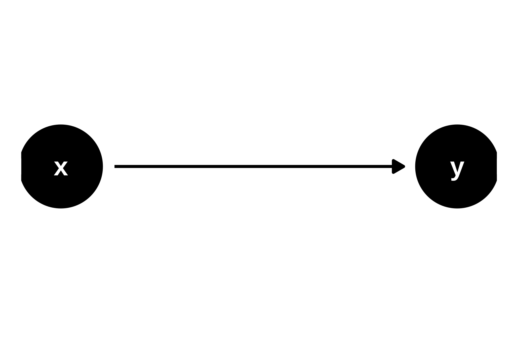

x causes y.
Una forma de hacer explícitas las relaciones causales es simplemente dibujándolas
x causes y.
Los Dags nos ayudan a evitar y entender algunas paradojas como la de Simpson.
x e y están asociados aunque no hay flecha causal entre ellosx e y están relacionados sólo a través de qx e y no están relacionados.Los path que transmiten asociación se les llama open path Los que no transmiten asociación se les llama closed_path
Ahora bien, ¿deberiamos ajustar por q para estimar el efecto de x en y?
En el fork dibujado dónde suponemos que no hay asociación entre x e y pero si entre x y q y entre y y q, si se debería condicionar por q para obtener el efecto causal. Condicionar por q bloquea el camino y así se elimina ese sesgo.
q es una causa común del tratamiento y de la respuesta. Ejemplo, unos datos observacionales dónde se quiere estimar el efecto de un medicamento en la salud de los pacientes, y q es la gravedad actual de una enfermedad. Puede suceder que en esos datos sólo se le haya dado el medicamento nuevo a los pacientes graves, mientras a los menos graves se le da tratamiento convencional en teoría menos efectivo. Podríamos obtener que el efecto del medicamento es pernicioso. Para eso lo que se hace es controlar (estratificar o incluir en el modelo) la variable del grado de la enfermedad. En un estudio experimental aleatorizado, nos evitamos en gran parte este problema, puesto que la aleatoriedad nos garantiza que las variables de confusión , incluso las no observadas, se reparten de forma equitativa entre los grupos de tratamiento y control.
En el chain depende de qué efecto se quiera estimar. si se quiere estimar el efecto global de x sobre y entonces no se debe condicionar, porque parte del efecto es a través de q. Si se quiere estimar el efecto directo entonces si se ha de condicionar por q, para de esta forma descontar el efecto mediado por q
En un collider no se debe condicionar por q porque q es una consecuencia de x e y y condicionar por q bloquearía el camino de asociación entre x e y. Buscar ejemplo
Copiar código en la consola de webR
n = 1000
x <- rnorm(n)
###
### q
linear_pred <- 2 * x + rnorm(n)
prob <- 1 / (1 + exp(-linear_pred))
q <- rbinom(n, size = 1, prob = prob)
###
### y
y <- -4 * q + rnorm(n)
###
mediator_data <- tibble(x, y, q = as.factor(q))
p1 <- mediator_data |>
ggplot(aes(x, y)) +
geom_point(alpha = .2) +
geom_smooth(method = "lm", se = FALSE, color = "black") +
facet_wrap(~"not adjusting for `q`\n(total effect)")
p2 <- mediator_data |>
ggplot(aes(x, y, color = q)) +
geom_point(alpha = .2) +
geom_smooth(method = "lm", se = FALSE) +
facet_wrap(~"adjusting for `q`\n(direct effect)")
p1 + p2Por esto lo de ciencia antes que estadística.